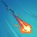
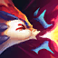
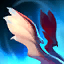
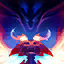

"I bring the heat!" — Smolder
Smolder is a fierce dragon who strikes fear into the hearts of his enemies. This noble dragon walks toward greatness and the creation of a legend. Majestic, fearless, and indomitable, Smolder rises above the mundane inhabitants of Runeterra, reigning as the supreme being of this land.
This amazing being can perform the following feats:
- DRAGON PRACTICE: Hitting champions with Abilities and killing enemies with Super Scorcher Breath grants a stack of Dragon Practice. Stacks increase the damage of Smolders basic Abilities.
- SUPER SCORCHER BREATH:  Smolder breathes fire on an enemy. As he gains more stacks, this ability becomes more powerful.
- ACHOO!:  Smolder lets out an adorable flaming sneeze that explodes when hitting enemy champions.
- FLAP, FLAP:  Smolder takes flight ignoring terrain and bombarding the lowest health enemy.
- MMOOOMMMM!:  Smolder calls his mom to breath fire from above, dealing extra damage and slowing enemies in the center of her fire.